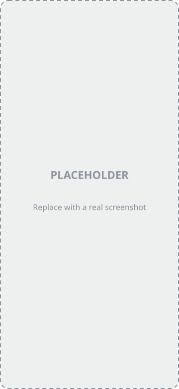
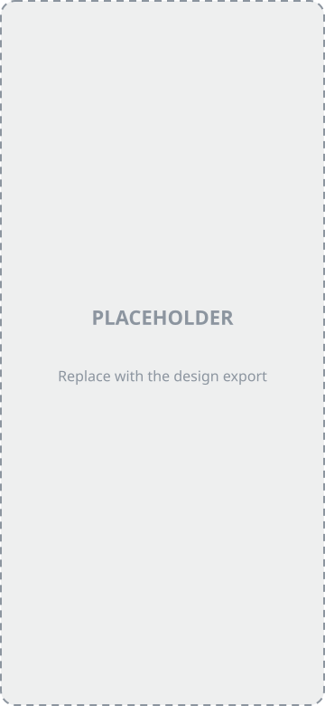

The settings screen works on the device; one spacing differs from the design
All three states render on a real phone and the sheet opens and closes smoothly at normal animation speed. The list gap is 12 px where the design has 16 px (finding 1); everything else matches.
Not verified
- Dark theme: only the light theme was run on the device.
- Tablets and landscape: not run.
How it was checked
- Device
- Phone emulator, Android 16, 1080 × 2400
- Build
devDebugfrom commitabc1234- Backend
- Local stand
my-branch - Animations
- Window, transition and animator scales all 1 (read back before recording)
- Captured with
- Screenshots and a screen recording from the device itself
Commands and logs
The exact commands, their output and the crash check go here.
States

Filled state against the design

Motion: opening and closing the sheet
Before and after
Findings
- MediumThe list gap is 12 px; the design has 16 px. See state 2. Question 1 in the chat.
- LowThe error banner text wraps on two lines. See state 3.